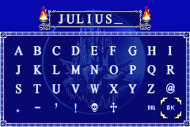
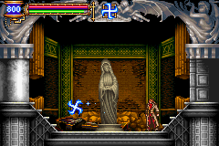
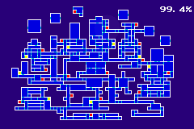
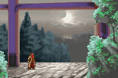
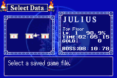

|
Julius
Julius Name
สามารถเลือกเล่น Julius ได้ หากเล่น Soma จบ 1 รอบ
โดยให้เลือกเล่นใน Save ใหม่ และใส่ชื่อว่า JULIUS

Julius Skill
Julius เริ่มต้นจะมี Level 0 และไม่สามารถเก็บประสบการณ์ได้
แต่เขาสามารถเพิ่มความสามารถได้โดยการปราบ Boss
เมื่อ Julius ปราบ Boss ไป 1 ตัว เขาก็จะเก่งขึ้น
ส่วนความสามารถอื่นๆ จะมีคล้ายๆ กับ Soma คือ
สามารถ Double Jump และ Jump Kick ได้
รวมทั้งสามารถทำ Hight Jump (กระโดดพุ่งตัว) ได้
นอกจากนี้ Julius ยังสามารถ Dash ไปด้านหน้าแบบหายตัวได้อีกด้วย
* Note : ท่า Dash นอกจากใช้หลบศัตรูแล้ว ยังสามารถใช้พุ่งผ่านน้ำตก (WallSecretE)
และประตูที่เป็นหน้าปีศาจ (WallSecretA)
ได้ด้วย
Julius Weapon
นอกเหนือจาก "แส้" ที่ Julius ใช้แล้ว เขายังสามารถใช้อาวุธเสริมได้อีก
มีทั้ง Axe, HolyWater, HolyCross, GrandCross

Julius Map
แผนที่ของ Julius จะเหมือนกันกับของ Soma แต่ Julius จะไม่สามารถเข้าประตูดำได้
ทำให้เขาสามารถเปิดแผนที่ทั้งหมดได้เพียง 99.4% เท่านั้น

* Note : หากเข้าไปในห้อง Boss : Graham จะมีแผนที่ 99.5% แต่ไม่สามารถเซฟเก็บไว้ได้
Julius Ending
เมื่อสามารถปราบ Graham ได้ก็จะพบฉากจบเช่นกัน

Julius Boss Rush
เมื่อเล่น Julius จบ 1 รอบ จะสามารถนำมาใช้เล่นในโหมด Boss Rush ได้ด้วย

|